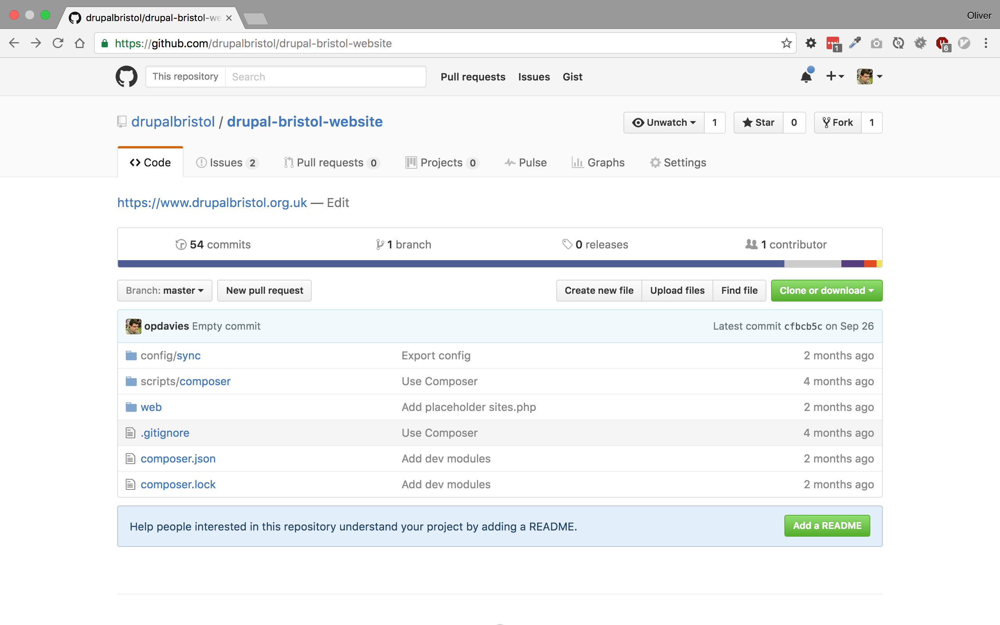

Goodbye Drush Make. Hello Composer!

Oliver Davies
- Senior Drupal/PHP Developer
- Appnovation Technologies
- @opdavies


Also...
- Former Drupal Association employee
- Drupal 7 and 8 core contributor and mentor
- Co-organiser of Drupal Bristol, SWDUG and PHPSW
- Co-founder and co-organiser of DrupalCamp Bristol
- Symfony/Silex/Laravel hobbyist
The "Old" Ways
Monolith repository
- Everything in one repository
- Easiest to set up, most difficult to maintain
- Core, contrib code in your repository
Drush Make
- Define your site as code
- Automated updates, patching
Drush Make
- Drupal specific
- Multiple repositories
- Can't update an existing build
- Need to "compile"
drupalbristol.make
api = 2
core = 7.x
projects[drupal][type] = "core"
projects[drupal][version] = "7.51"
drupalbristol.make
api = 2
core = 7.x
projects[drupal][type] = "core"
projects[drupal][version] = "7.51"
projects[pathauto] = "1.3"
drupalbristol.make
api = 2
core = 7.x
projects[drupal][type] = "core"
projects[drupal][version] = "7.51"
projects[pathauto][version] = "1.3"
projects[pathauto][subdir] = "contrib"
projects[pathauto][patch][] = "..."
Building
$ drush make drupalbristol.make some-dir
Beginning to build drupalbristol.make.
drupal-7.51 downloaded.
pathauto-7.x-1.3 downloaded.
Building
$ drush make drupalbristol.make some-dir
Base path some-dir already exists.
exit 1
Composer
Composer
- Dependency manager for PHP
- Downloads packages into a
vendordirectory - Downloads packages from one or more repositories
- Generates
composer.jsonandcomposer.lock
Adding Packages
$ composer require silex/silex
...
- Installing pimple/pimple (v3.0.2)
Downloading: 100%
- Installing silex/silex (v2.0.4)
Downloading: 100%
Writing lock file
Generating autoload files
composer.json
"require": {
"silex/silex": "^2.0"
}
Composer in Drupal
- Dependency management and autoloading in Drupal 8 (no included
vendordirectory since 8.1.x) - Not included with Drupal 7 (Composer Manager and xautoload in contrib)
Building Drupal with Composer
Building Drupal with Composer
- Use
drupal/drupalfrom Packagist - Use the
drupal-composer/drupal-projecttemplate
$ composer create-project \
drupal/drupal \
my_site_name ^8.2 --no-dev
$ composer create-project \
drupal-composer/drupal-project:8.x-dev \
my_site_name-dir --stability dev \
--no-interaction
Comparison
drupal/drupalis a minimum setup, no extras, uses the repo root as the docrootdrupal-composer/drupal-projectincludes installer paths, scaffold files, Drush, Drupal Consoledrupal-composer/drupal-projectavailable for Drupal 7 and Drupal 8
Managing contrib dependencies
Add Drupal.org as a repository
$ composer config \
repositories.drupal composer \
https://packages.drupal.org/8
composer.json
"repositories": {
"drupal": {
"type": "composer",
"url": "https://packages.drupal.org/8"
}
}
Configuring paths
"extra": {
"installer-paths": {
"modules/contrib/{$name}": ["type:drupal-module"],
"modules/custom/{$name}": ["type:drupal-custom-module"],
"profiles/contrib/{$name}": ["type:drupal-profile"],
"themes/contrib/{$name}": ["type:drupal-theme"],
"themes/custom/{$name}": ["type:drupal-custom-theme"]
}
}
Adding modules
$ composer require drupal/pathauto:^1.0
...
- Installing drupal/token (1.0.0-beta2)
Downloading: 100%
- Installing drupal/ctools (3.0.0-alpha27)
Downloading: 100%
- Installing drupal/pathauto (1.0.0-beta1)
Downloading: 100%
Adding modules with dependencies
$ composer require drupal/address:^1.0
...
- Installing commerceguys/addressing (v1.0.0-beta1)
Downloading: 100%
...
- Installing drupal/address (1.0.0-rc3)
Downloading: 100%
Adding themes
$ composer require drupal/omega:^5.0
Patching
$ composer require cweagans/composer-patches
Patching
"extra": {
"patches": {
"drupal/drupal": {
"Add startup configuration for PHP server":
"https://www.drupal.org/files/issues/1543858-30.patch"
}
}
}
Updating
composer install vs update
- "install" updates local code with versions defined in
composer.lock - "update" updates
composer.lockwith the latest available versions
Updating
$ composer update \
--with-dependencies
$ composer install --no-dev \
--optimize-autoloader
Updating
- Update the versions in composer.lock
- Deploy new version to the server
- Update local versions with
composer install
A real example
Resources
- https://getcomposer.org
- https://www.drupal.org/docs/develop/using-composer/using-composer-to-manage-drupal-site-dependencies
- https://github.com/drupal-composer/drupal-project